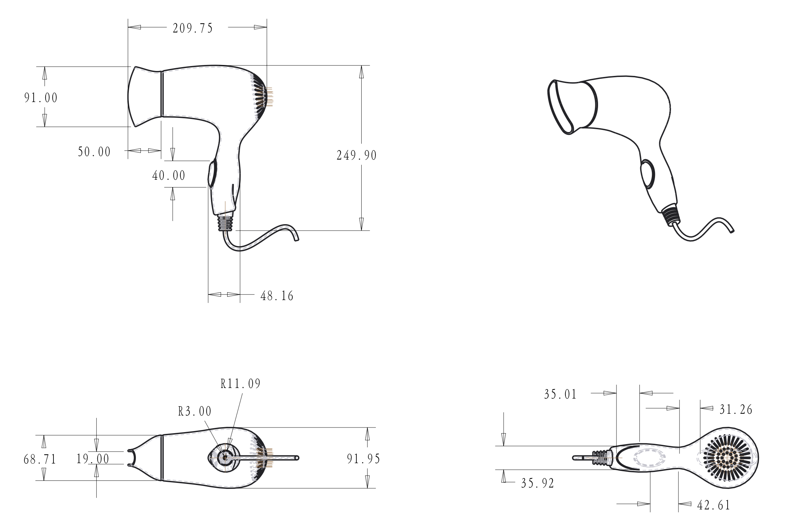

Try moving the mouse to see model details 👇
尝试移动鼠标以查看模型细节 👇
For this modeling exercise, we created a hair dryer. In the design process, we chose proe as the modeling software and supplemented it with keyshot for rendering the rendering.
本次建模练习，我们制作了一款吹风机。设计过程中，我们选择proe作为建模软件，辅以keyshot进行效果图渲染。

The design of this hair dryer is inspired by the duck bionic. The convergence of the mouthpiece helps to converge the ducts, converting the pressure energy generated by the blower into speed and increasing the blowing speed. The streamlined design approach makes the overall shape sleek, smooth and simple.
这款吹风机的设计灵感来自于鸭嘴仿生。吹嘴的聚拢有利于收敛管道，把风机产生的压力能转化成速度，提高吹风的速度。流线型的设计手法使得整体造型圆润光滑、流畅简洁。

The back of the grip has been graded to add texture to the shape, while being non-slip and helping the user grip better when in use.
细节展示部分，在握柄背部做了渐削面，造型上增加质感，同时防滑，实际使用时帮助用户更好抓握。
